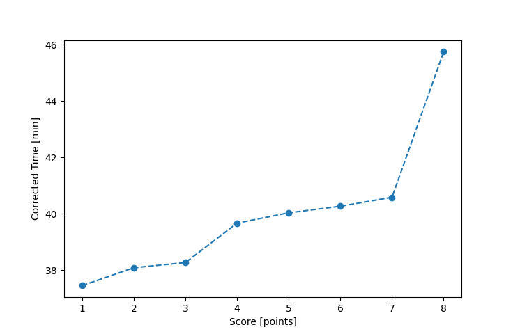

| Wind: | 2-3 (BFT) |
|---|---|
| RC: | Matt_L, Riz_J |
| Date: | August 28, 2022 |
| Notes: | M3 Starboard |
| Rank / Score | Name | Boat | Input Time [mm:ss] | Input Offset [mm:ss] | Race Time [mm:ss] | Race Time [s] | Handicap | Corrected Time [s] | Corrected Time [mm:ss] |
|---|---|---|---|---|---|---|---|---|---|
| 1.0 | Lewis_V | BCN | 32:35 | 00:00 | 32:35 | 1955 | 0.87000 | 2247 | 37:27 |
| 2.0 | Rod_H | LASEM | 37:03 | 00:00 | 37:03 | 2223 | 0.97300 | 2285 | 38:05 |
| 3.0 | Ian_O | SF | 38:25 | 00:00 | 38:25 | 2305 | 1.00400 | 2296 | 38:16 |
| 4.0 | Chris_E | SF | 39:50 | 00:00 | 39:50 | 2390 | 1.00400 | 2380 | 39:40 |
| 5.0 | Bill_P | SF | 40:12 | 00:00 | 40:12 | 2412 | 1.00400 | 2402 | 40:02 |
| 6.0 | Matt_T | SF | 40:26 | 00:00 | 40:26 | 2426 | 1.00400 | 2416 | 40:16 |
| 7.0 | David_Bu | SF | 40:45 | 00:00 | 40:45 | 2445 | 1.00400 | 2435 | 40:35 |
| 8.0 | Jim_S | SF | 45:56 | 00:00 | 45:56 | 2756 | 1.00400 | 2745 | 45:45 |
| 9.0 | Ryan_C | SF | FIP_9 | -- | -- | -- | -- | -- | FIP_9 |

Application Notes:
All race results are unofficial
View source code at https://github.com/cessnao3/portsmouthracecalc/